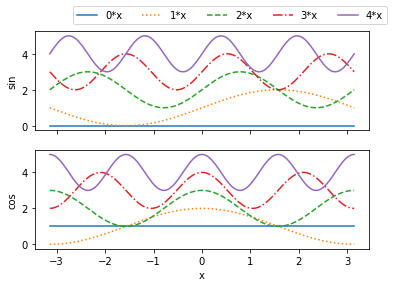

Line
Basic line plots
import numpy as np
import matplotlib.pyplot as plt
Single plot
Let's plot a few sine functions with different line types; we assign a label to each trace, which can be displayed in a legend.
x = np.linspace(-np.pi,np.pi, 200)
lts = ['-',':','--','-.','-']
for i in range(5):
plt.plot(x, np.sin(i*x)+i,lts[i],label="{0}*x".format(i))
plt.ylabel("y")
plt.xlabel("x")
plt.legend(ncol=1,bbox_to_anchor=(1.0,1), title='variable')
plt.show()

Subplots
To display multiple plots side-by-side, set up a subplot. Note the slightly different syntax for labels etc.
fig,ax=plt.subplots(2,1,sharex='col')
for i in range(5):
ax[0].plot(x,np.sin(i*x)+i,lts[i],label="{0}*x".format(i))
ax[1].plot(x,np.cos(i*x)+i,lts[i] )
ax[0].set_ylabel("sin")
ax[1].set_ylabel("cos")
ax[1].set_xlabel("x")
ax[0].legend(ncol=5,bbox_to_anchor=(0.1,1.02))
plt.show()

Grammar of graphics with Pandas
An alternative to this jovial menagerie of commands is to create plots following a grammar of graphics, such as implemented in Seaborn. Data should be prepared in long format Panda DataFrames.
Download this page as a Jupyter notebook or as a standalone Python script.